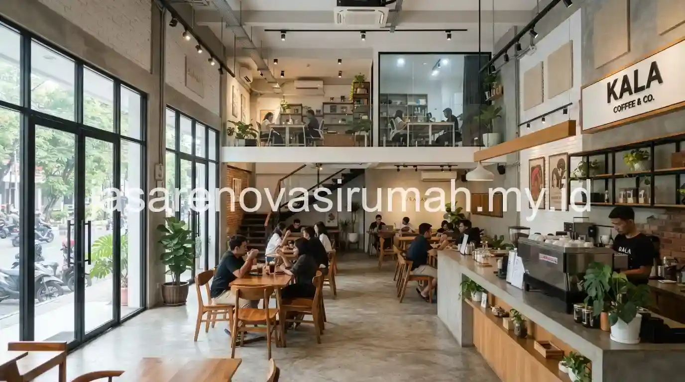
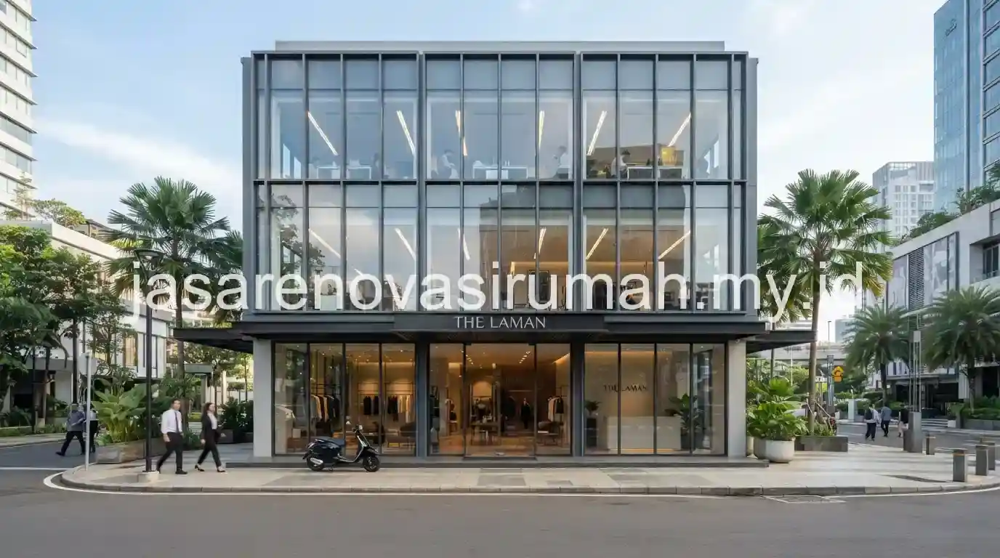

Jasa renovasi ruko Surabaya untuk kebutuhan usaha kuliner maupun kantor umumnya mencakup pembagian ulang ruang sesuai fungsi operasional, penataan jalur mekanikal elektrikal (MEP) yang rapi, serta perbaikan fasad menggunakan kaca untuk tampilan yang lebih modern dan menarik pengunjung. Kawasan seperti Tegalsari yang padat dengan aktivitas usaha kecil dan menengah membuat kebutuhan renovasi ruko di Surabaya cenderung fokus pada efisiensi ruang sekaligus daya tarik visual dari luar.
Bagaimana Pembagian Ruang yang Tepat untuk Ruko Usaha Kuliner atau Kantor?
Pembagian ruang pada ruko usaha kuliner biasanya memisahkan area dapur, area kasir, dan area makan pengunjung, sementara ruko untuk kantor lebih menekankan pada pembagian ruang kerja, ruang meeting, dan area resepsionis.
Untuk usaha kuliner, beberapa prinsip pembagian ruang yang umum diterapkan:
- Area dapur diletakkan di bagian belakang dengan sirkulasi udara yang baik untuk mengurangi panas dan asap.
- Area kasir ditempatkan dekat pintu masuk agar mudah diakses pengunjung sekaligus memudahkan pengawasan.
- Area makan memanfaatkan sisa ruang dengan penataan meja yang efisien namun tetap nyaman untuk pengunjung.
Sementara untuk ruko yang difungsikan sebagai kantor, pembagian ruang biasanya lebih menekankan privasi di ruang meeting dan efisiensi jalur sirkulasi karyawan menuju masing-masing meja kerja. Kedua jenis pembagian ruang ini membutuhkan perencanaan denah yang matang sejak awal, mengingat ruko umumnya memiliki bentuk memanjang dengan lebar terbatas dibanding bangunan komersial berdiri sendiri.
Apa Saja yang Termasuk dalam Jalur MEP Saat Renovasi Ruko?
Jalur MEP (mekanikal, elektrikal, dan plumbing) pada renovasi ruko mencakup instalasi listrik untuk kebutuhan daya usaha, sistem plumbing untuk dapur atau toilet, serta ventilasi mekanikal seperti exhaust fan untuk area dapur.
Berikut komponen MEP yang perlu diperhatikan saat merenovasi ruko:
| Komponen MEP | Cakupan Pekerjaan | Catatan Penting |
|---|---|---|
| Instalasi listrik | Jalur kabel, panel listrik, titik lampu dan stop kontak | Sesuaikan kapasitas daya dengan kebutuhan peralatan usaha |
| Plumbing | Saluran air bersih dan kotor untuk dapur/toilet | Pastikan kemiringan pipa cukup untuk mencegah sumbatan |
| Ventilasi mekanikal | Exhaust fan, cerobong asap dapur | Wajib untuk usaha kuliner agar asap tidak menyebar ke area makan |
| Sistem proteksi kebakaran | Alat pemadam api ringan (APAR), jalur evakuasi | Penting terutama untuk ruko dengan dapur bertenaga gas |
Perencanaan jalur MEP sebaiknya dilakukan di awal proses renovasi, sebelum pekerjaan partisi dan finishing dimulai, karena perubahan jalur MEP di tengah proyek biasanya membutuhkan pembongkaran ulang yang menambah biaya dan waktu pengerjaan.

Apa yang Perlu Diperhatikan Saat Memasang Fasad Kaca pada Ruko Komersial?
Pemasangan fasad kaca pada ruko komersial perlu memperhatikan jenis kaca yang digunakan, kekuatan rangka pendukung, serta orientasi bangunan terhadap sinar matahari agar tidak membuat interior terlalu panas.
Beberapa hal yang perlu diperhatikan saat memasang fasad kaca:
- Gunakan kaca tempered untuk keamanan tambahan, terutama pada ruko yang berhadapan langsung dengan jalan raya ramai.
- Pertimbangkan penggunaan kaca dengan lapisan reflektif atau tinting untuk mengurangi panas matahari yang masuk ke dalam ruangan.
- Pastikan rangka aluminium atau besi yang menopang kaca memiliki kekuatan yang memadai, terutama untuk fasad berukuran besar.
- Sediakan sistem pembersihan yang mudah diakses untuk perawatan kaca secara berkala.
Fasad kaca memang memberi kesan modern dan menarik perhatian pengunjung dari luar, namun tetap perlu diimbangi dengan solusi pengendalian panas agar kenyamanan di dalam ruko tetap terjaga sepanjang hari, mengingat kondisi iklim Surabaya yang cenderung panas.
Bagaimana Aspek Perizinan Terkait Sekat atau Perubahan Fungsi Ruko?
Perubahan sekat ruangan atau fungsi ruko dari yang tercantum dalam izin awal sebaiknya dikonfirmasi terlebih dahulu ke pengelola kawasan atau dinas terkait, terutama jika perubahan tersebut cukup signifikan terhadap struktur atau fungsi bangunan.
Beberapa ruko yang berada dalam kawasan komersial terpadu biasanya memiliki aturan tersendiri terkait renovasi sekat dan perubahan fasad, sehingga sebaiknya dikoordinasikan dengan pengelola kawasan sebelum pekerjaan dimulai agar tidak menimbulkan masalah administratif di kemudian hari. Prinsip legalitas ini juga relevan dengan pembahasan pada rekomendasi kontraktor renovasi rumah Jawa Timur, yang menekankan pentingnya dokumen kerja tertulis dan legalitas kontraktor sebelum proyek dimulai.
Pada akhirnya, renovasi ruko yang efektif membutuhkan perencanaan pembagian ruang, jalur MEP, dan fasad yang saling terintegrasi, bukan dikerjakan secara terpisah tanpa koordinasi. Jika Anda membutuhkan pendampingan menyeluruh mulai dari desain hingga pelaksanaan, tim jasa kontraktor renovasi Surabaya kami siap membantu proyek fit-out ruko Anda dengan RAB yang transparan.
FAQ Seputar Renovasi Ruko
Ainur Reza
Penulis Profesional & Praktisi Konstruksi
Ainur Reza adalah seorang penulis profesional yang memiliki ketertarikan mendalam pada dunia arsitektur dan konstruksi. Dengan pengalaman bertahun-tahun mengamati tren renovasi rumah, ia aktif membagikan panduan praktis, tips RAB, dan wawasan seputar material bangunan untuk membantu pemilik rumah mewujudkan hunian impian mereka dengan anggaran yang efisien.